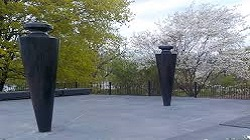
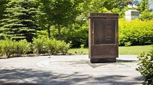
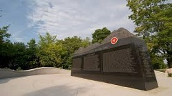
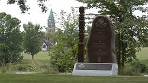

HISTORICAL MONUMENTS OF CANADA - THE WEALTH OF CANADIAN TOURISM
In Canada, a number of monuments have been erected to honour royal individuals, whether a member of the past French Royal Family, British Royal Family, or present Canadian Royal Family, thus reflecting the country's status as a constitutional monarchy under the Canadian Crown.
You get an oppertunity to visit number of monuments across canada by booking through entertainment now. We have licensed travel guides who can guide you and provide vital informations about canadian monuments and get a chance to explore canada.

Canadian Firefighters Memorial
Canadian Firefighters Memorial is located in the heart of Canada's Capital at LeBreton Flats,
site of the Great Ottawa Fire of 1900.
Animals in war dedication
The Animals in War Dedication honours animals that served alongside their human comrades in war.

Anishinabe Monuments
This bronze sculpture of an Anishinabe scout is located in Majors Hill Park, in Ottawa.

Canadian Building Trades Monument
Canadian Building Trades Monument is located in Majors Hill Park, in Ottawa.
Canadians tribute to human rights monument
Located in downtown Ottawa, this monument is the first in the world dedicated to universal human rights.

CANLOAN Memorial
The CANLOAN Memorial is dedicated to Canadian officers who died while serving with the British Army during the Second World War.
Colonel by statue
The statue of Colonel By stands in Major's Hill Park, in Ottawa.

Defence of Hong Kong Memorial wall
This monument, unveiled in 2009, honours Canadians who defended Hong Kong during the Second World War.
Harper Memorial
This monument is located next to the gate to Parliament Hill, near the corner of Wellington and Metcalfe streets.

Hungarian Monument
The Hungarian Monument stands on Maple Island, near Sussex Drive, in Ottawa.
{kind=link}
{kind=link}
{kind=link}
{kind=link}
{kind=link}
{kind=link}
{kind=link}
{kind=link}